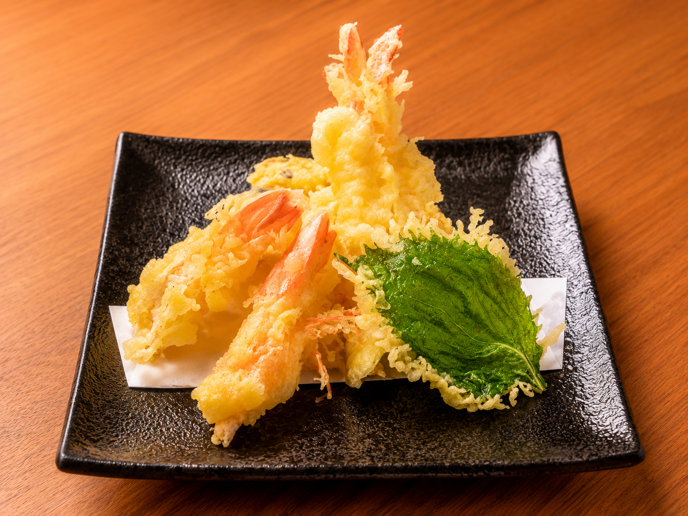
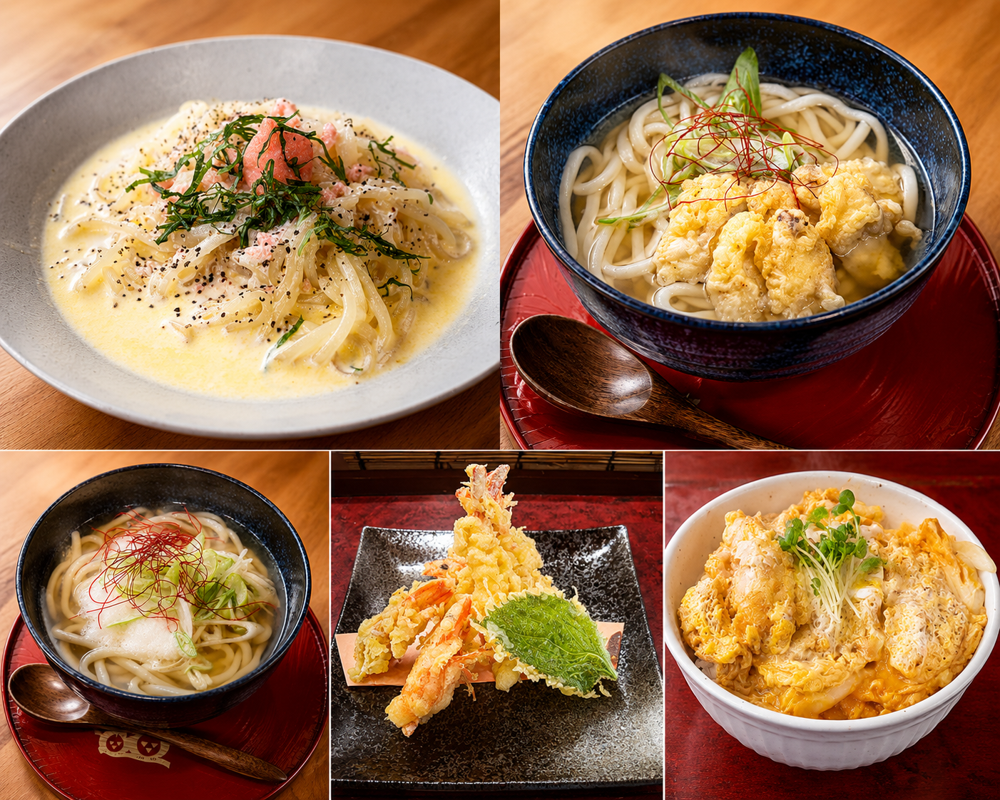

酒処 かずおうどん
こだわり
うどん・ご飯
酒の肴
店舗案内
Menu
お品書き
※価格は税込です。仕入れにより内容が変わる場合があります。
うどん・ご飯もの
Udon & Meal
肉ごぼう天うどん
山かけうどん
明太クリームうどん
カツ丼
うどん
かけうどん
550円
釜たまうどん
600円
月見うどん
650円
きつねうどん
700円
ごぼう天うどん
700円
肉うどん
750円
山かけうどん
800円
肉ごぼう天うどん
850円
明太釜玉うどん
850円
牛すじうどん
850円
海老天うどん
850円
明太クリームうどん
850円
和風ちゃんぽん
1,000円
ぶっかけうどん
ぶっかけうどん
700円
ナスぶっかけうどん
800円
山かけぶっかけうどん
900円
肉ぶっかけうどん
1,000円
セット・ご飯もの
かずおうどんセット（月替わり）
1,200円
カツ丼・とろろ昆布うどんセット
1,200円
肉吸いセット（ライス付き）
1,000円
カツ丼
850円
牛丼
850円
生姜焼き丼
850円
あぶりチーズ牛丼
900円
トッピング
肉 / 牛すじ / いか天
各300円
山かけ
250円
海老天1本 / とろろ昆布 / ごぼう天
各200円
卵
100円
酒の肴
Izakaya

車エビの天ぷら

手作りの一品料理
天ぷら
車エビの天ぷら（3本）
1,500円
天ぷら盛り合わせ
1,000円
明太子の天ぷら
700円
キスの天ぷら
600円
紅しょうがの天ぷら
550円
コロコロイカ天
500円
焼きもの
車エビの塩焼き
1,200円
しまほっけ
900円
せせりの炭火焼
700円
やげんなんこつ炭火焼
700円
さばの塩焼き / ぎんさけの塩焼き
各600円
揚げもの・一品
いかリングフライ
700円
エビマヨ / しめ鯖の炙り / チーズボール
各650円
牛スジの煮込み / ホルモン焼き
各600円
ピリ辛チキンバー / じゃがバタチーズ
各600円
なんこつ唐揚げ
550円
ポテトフライ
300円
サクッとおつまみ
ほたるイカの沖漬 / 梅なんこつ
各600円
あぶり明太子 / エイひれあぶり
各600円
冷ややっこ / 枝豆 / チャンジャ
各300円
トップページへ戻る